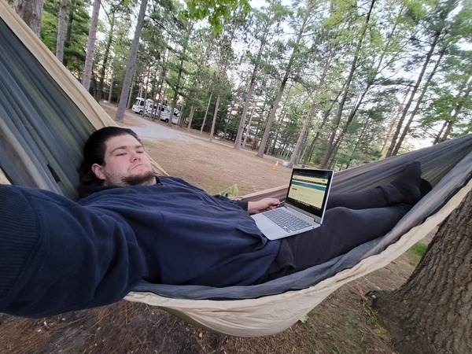
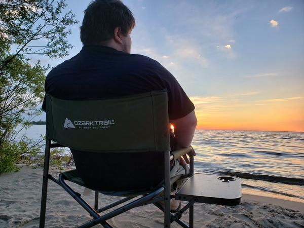

Student
As a student attending NMC I've demonstrated top notch performace. Begining in the 2021 spring semester I made the dean's list while working full time and assisting fellow classmates through weekly online study groups I arranged.
Hobbist Programmer
I began learning programming over a decade ago as a hobby and am now working on building on that foundational knowledge and turn my hobby into a career.
Frontline Grocery Manager
While many people were switching to remote work, I was working more in-person hours. Through 2020 I was in charge of maintaining order and keeping an entire store full of co-workers and customers safe.

